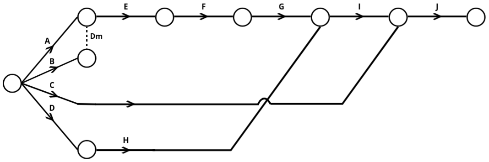
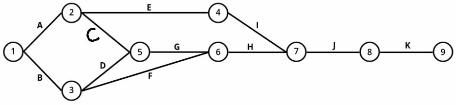

CPM & PERT
Network Analysis: CPM and PERT
Network analysis is a method used in project management to plan, schedule, and control complex projects. Two of the most popular techniques under network analysis are the Critical Path Method (CPM) and the Program Evaluation and Review Technique (PERT). These techniques help project managers in managing their projects effectively by providing tools to visualize tasks, time estimates, and resources.
Key Terms in Network Analysis
- Activity: An activity is any task or work that needs to be done in a project. It's a part of the project that consumes time and resources (such as manpower, materials, money, etc.). It is represented by an arrow in network diagrams.
- Event (or Node): An event is a milestone or a point in time that marks the beginning or end of an activity. Events do not consume time or resources and are represented as circles or nodes in a network diagram.
- Network: A network is a graphical representation that shows the sequence and logical relationship between activities and events in a project. It is also known as an arrow diagram, where arrows represent activities, and circles represent events.
What is a Project?
- Project: A project is a collection of interrelated tasks that need to be executed in a specific order to achieve a goal. Projects usually have a clear objective, and the activities must be planned in sequence to avoid delays or inefficiency.
- Basic Requirements of a Project: A project must be completed on time, with minimal use of resources and investment. Managing these requirements is key to project success.
Phases of Project Management
- Project Planning: This is the first phase where the project is broken down into individual tasks or activities. You will also determine time estimates for each task and establish the precedence relationships between tasks (which tasks need to be completed before others).
- Project Scheduling: In this phase, you calculate the exact start and finish times for each activity. You also determine the earliest and latest times at which the project’s events can occur.
- Project Controlling: This phase involves reviewing the progress of the project by comparing the actual work accomplished with the scheduled work. If there are any deviations, the schedule is updated accordingly to keep the project on track.
Understanding CPM (Critical Path Method)
- CPM: The Critical Path Method is an activity-oriented technique, meaning it focuses on activities and their relationships. It is a deterministic model, meaning it provides a fixed time estimate for the completion of each activity.
- Fixed Time: In CPM, each activity has a fixed time duration. The method works best when the duration of activities is well-known and does not vary.
- Repetitive Projects: CPM is commonly used for projects with repetitive tasks, such as the construction of buildings or bridges. The time for each activity can be predicted with certainty.
Understanding PERT (Program Evaluation and Review Technique)
- Pert: The Program Evaluation and Review Technique is an event-oriented network method. It focuses on the events (milestones) that occur between activities. PERT is a probabilistic model, which means it accounts for uncertainty in activity durations.
- Range of Time: Unlike CPM (Critical Path Method), PERT takes a different approach by using a range of time estimates for each task. Instead of relying on a single fixed duration, PERT looks at three scenarios: the optimistic time (if everything goes perfectly), the pessimistic time (if things take longer than expected), and the most likely time (the duration you think is most realistic). By considering these different possibilities, PERT helps you estimate the chances of finishing the project within a specific time frame, giving a more flexible and realistic view of the schedule.
- Non-repetitive Projects: PERT is used for non-repetitive or one-time projects where the duration of tasks is uncertain. Examples include launching a satellite or conducting research projects.
CPM vs PERT: Key Differences
Application of CMP & PERT:
- Project Scheduling: CPM and PERT are widely used for scheduling complex projects by dividing them into smaller, manageable activities. These techniques enable project managers to visualize the sequence of tasks, determine the starting and ending times for each, and ensure that the project stays on track. For instance, in construction projects or event planning, they help identify dependencies and allocate resources efficiently to minimize delays. By offering a structured timeline, CPM and PERT make it easier to monitor progress and adjust schedules if unexpected issues arise.
- Identifying the Critical Path: One of the key advantages of CPM and PERT is their ability to identify the critical path. This path represents the sequence of tasks that directly impacts the project's completion time. By focusing on these critical activities, project managers can prioritize resources and ensure that any delays on the critical path are addressed promptly. This feature is especially useful in projects where time is a significant constraint, such as launching a product or completing a public infrastructure project.
- Resource Allocation: These techniques help in optimizing the allocation of resources like manpower, machinery, and materials. CPM is particularly effective in balancing resource usage by identifying periods of high demand and adjusting schedules to avoid overuse or underutilization. For example, in manufacturing, CPM ensures that machines and workforce are used effectively without unnecessary downtime or bottlenecks.
- Risk Management: PERT excels in scenarios involving uncertainty by incorporating three time estimates—optimistic, pessimistic, and most likely. This allows project managers to assess risks and prepare contingency plans. In research and development projects, where timelines are often uncertain, PERT provides a realistic understanding of potential delays and helps in mitigating their impact on the overall schedule.
- Cost Control: Both CPM and PERT facilitate cost management by highlighting areas where savings can be achieved. CPM, in particular, helps identify opportunities for "crashing" activities, where additional resources can be allocated to shorten the timeline without exceeding the budget. This is especially beneficial in industries like construction, where project delays can lead to significant financial losses.
- Improved Communication and Coordination: By providing a visual representation of the project plan, CPM and PERT enhance communication among team members and stakeholders. Everyone involved can understand the project’s flow, dependencies, and critical activities, leading to better coordination. For instance, in large infrastructure projects, these techniques help align contractors, suppliers, and clients on the same page.
- Performance Evaluation: These methods serve as excellent tools for evaluating project performance by comparing planned progress with actual progress. Deviations from the schedule can be identified early, allowing project managers to take corrective actions. In IT projects, for instance, this ensures that milestones are met and deliverables are completed as promised.
Network Diagram
- In order to solve the problem of CPM and PERT we must understand how to construct a network diagram
Rules for Network Construction:
- No Two Activities Should Have Same Starting and Ending Event:
- Each event in the network diagram must have a unique start and end point. If two activities share the same start and end points, this is not allowed.
- Solution: Use dummy activities to avoid this overlap.

- Activities Must Follow Precedence:
- Activities are to be arranged in a logical order based on their precedence (i.e., some activities can only start once others are finished). For example, Activity B can only start after Activity A is completed. This relationship is crucial in the diagram construction.
- Use of Dummy Activities:
- A dummy activity is an activity that doesn’t consume time or resources. It’s used to show the logical relationship between activities when they can't directly be connected due to precedence constraints.
- Dummy activities are drawn using dashed lines and serve the sole purpose of maintaining correct precedence.

- Single Representation of Each Activity:
- Each activity should be represented only once in the network diagram.
- One Starting and One Ending Event:
- The network should have one single starting event (no multiple starting points) and one single ending event (no multiple finishing points). This ensures clarity in the project flow.

1: Construct a network diagram from the table below:
+------------+---------------+
| Activity | Preceded By |
+------------+---------------+
| A | - |
| B | - |
| C | - |
| D | - |
| E | A, B |
| F | E |
| G | F |
| H | D |
| I | G, H |
| J | C, I |
+------------+---------------+

Now that our network construction is complete, we need to number the events. The numbering of events is done using Fulkerson's Rule.
Fulkerson's Rule Steps:
- Start by identifying the initial event, which has all outgoing arrows and no incoming arrows. This event is numbered as 1. For example, in the network, the first node with only outgoing arrows is labeled as event 1.
- Next, delete all the outgoing arrows from this numbered event. By doing so, new nodes in the network will now become initial events—nodes with outgoing arrows and no incoming arrows. These newly identified initial events are then numbered sequentially, such as 2, 3, etc.
- For each node you process, continue deleting the outgoing arrows from the numbered events to reveal more initial events. For instance, if event 1 is processed and its outgoing arrows are erased, event 2 might appear as the next initial event. Similarly, event 3 could emerge once its preceding arrows are removed.
- In cases where dummy arrows or unique dependencies exist, these are treated carefully. The numbering proceeds only when the dummy arrows or specific conditions are cleared, ensuring the correct sequence of events.
- Repeat this process until you reach the final or terminal node. This node is unique as it has all incoming arrows and no outgoing arrows. The final event is assigned the last number in the sequence.
2: Construct a network diagram from the table below:
+------------+---------------+
| Activity | Preceded By |
+------------+---------------+
| A | - |
| B | - |
| C | A |
| D | B |
| E | A |
| F | B |
| G | C, D |
| H | G, F |
| I | E |
| J | H, I |
| K | J |
+------------+---------------+

Critical Path
- It is the chain of activities with the longest time durations. These activities are called critical activities. They are critical in the sense that a delay in any of them results in a delay in the completion of the project.
Steps to Find the Critical Path:
- Calculate the time schedule for each activity.
- Calculate the time schedule for the completion of the entire project.
- Identify the critical activities and find the critical path.
Q: Tasks A, B, C, ..., H, and I constitute a project. The precedence relationships are:
- A < D, A < E; B < F; D < F; C < G; C < H; F < I; G < I
- Draw a network diagram to represent the project and find the critical path, when the time (in days) for each task is as follows:
Activity | A | B | C | D | E | F | G | H | I
---------+-----+-----+-----+-----+-----+-----+-----+-----+-----
Time | 8 | 10 | 8 | 10 | 16 | 17 | 18 | 14 | 9
Solution:
- A < D means D is preceded by A. Now we will create a table which contains precedence.
-
+------------+----- +-------------+ | Activity | Time | Preceded By | +------------+--------------------+ | A | 8 | - | | B | 10 | - | | C | 8 | - | | D | 10 | A | | E | 16 | A | | F | 17 | B, D | | G | 18 | C | | H | 14 | C | | I | 9 | F, G | +------------+------+-------------+ - Network Diagram:

-
Now that we have drawn the network diagram, the next step is to calculate the earliest and latest times for each event.
To calculate the earliest time, we use the forward pass method. In this method:- Start from the initial node (starting point) of the network.
- As you move to the next node, add the duration of the corresponding activity to the earliest time of the current node.
- If there are multiple incoming activities to a node, select the maximum of the calculated times as the earliest time for that node.
- Start from the final node (ending point) of the network and assign it the same value as its earliest time.
- As you move backward to the preceding nodes, subtract the duration of the corresponding activity from the latest time of the current node.
- If there are multiple outgoing activities from a node, select the minimum of the calculated times as the latest time for that node.
- E6 is the completion of the project.
- Now we have found earlest and latest time for each node now we check at which node value of E and L are same:
[L1 = 0 = E1], [L2 = 8 = E2], [L4 = 18 = E4] and [E6 = 18 = L6]
Now joining them we will get our critical path.
So Critical Path = 1 → 2 → 4 → 5 → 6
in terms of activites critical path = A → D → F → I.